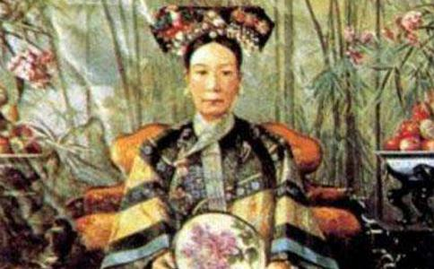

提起慈禧太后垂帘听政，几乎是家喻户晓，却很少有人知道朝廷的文武大臣为什么会称她为老佛爷。其实，这里面还有个不为人知的秘密，而且这个秘密还与一碗“红福萝”有关。
慈禧太后垂帘听政后，朝廷里许多大臣都惧怕她三分，这倒不是她大权在握，独断专行，而是因为她喜怒无常，心狠手辣。慈禧手下有个太监叫李莲英，这人不仅聪明过人，而且惯会看风使舵之术。自从慈禧垂帘听政掌握了朝廷大权，他就认定慈禧是中国的第二个武则天，要想出人头地光宗耀祖，就必须有慈禧这样的人做靠山，否则就没有出头之日。找慈禧做靠山，话好说，真正把事办成那可就难了。俗话说伴君如伴虎，不要说靠，整天的跟在慈禧屁股后面转，不知道哪句话说得不对劲，脑袋就搬家了。
这天，李莲英坐在自己的房间里忧心忡忡，苦于不知如何取悦于慈禧太后，一个小太监匆匆跑来，说慈禧太后传他即刻进慈宁宫给她说笑话解闷。李莲英说：“见天儿这么说，我哪有那么多笑话说！这可怎么办呀！”小太监说：“平时您的脑子就好使，我们慢点走，等走到了慈宁宫太后那，您不就把笑话编好了吗。”小太监的一句话惊醒梦中人，李莲英的脑袋突然灵光一闪有了主意。
李莲英一路无言，来到慈宁宫进门就给慈禧太后道喜：“皇太后洪福齐天，大喜临门！”慈禧被李莲英弄得一头雾水，忙问李莲英：“喜从何来，不要耍贫嘴，快说个笑话听听。李莲英马上说：“奴才该死，奴才不是耍贫嘴，皇太后真是喜从天降。”慈禧太后见李莲英跪在地上不肯说出缘由，佯装
李莲英跪在地上说，昨天晚上他喝了皇太后恩赐的好茶，兴奋得半宿不曾入眠。到了后半夜，刚有一点朦胧之意，只见房内突然红光一闪，满堂通明，以为房内失火，吓得自己猛然坐了起来，奇怪的是西天如来
慈宁宫里的宫女们一听这话，呼啦一声跪倒在地，三呼“老佛爷千岁，千岁，千千岁”！
慈禧太后见此情景，满面春风地说：“天意难违，也罢，传令下去，从今个儿起，就叫哀家‘老佛爷’吧，每年三月初三南海观世音
李莲英因为虚构了如来降临的故事，一步登天做了太监总管。
慈禧太后得了老佛爷的名号之后，除了平时有吃斋
一晃，这年的三月初三又临近了。慈禧太后传下懿旨，让御膳房仔细准备斋饭，哪位御厨素菜做得好有重赏，做得不好就得重刑伺候。懿旨一下，不但吓坏了众多御厨，也吓坏了掌膳太监，这么大的事，谁不害怕。于是，掌膳太监就联合众御厨凑了不少银两，给李莲英送礼，目的是求他在慈禧太后用膳时巧妙周旋。
自从慈禧太后给御膳房下了懿旨，李莲英心里也像怀揣了小兔子，忐忑不安。他深知慈禧太后喜怒无常的脾气，大斋之日，如果真的有哪道菜不中她的意，降罪下来，不但御厨遭殃，自己也可能被狠狠怪罪。再想想自己多年来委曲求全，好不容易熬到今天这一步，不能就这么前功尽弃，必须想个两全其美之策。李莲英苦苦思索，几乎一夜无眠。第二天，他暗中在各地召集天下技艺高超的名厨，意在帮助御膳房度过这一难关。李莲英很快找到了十名技艺高超的大厨，秘密充实到御膳房帮助准备素食。为了万无一失，李莲英提前对膳食样品一一过目，他把自己认为有创意的素菜精心编制成菜谱，呈报给慈禧太后看，慈禧太后过目后却没有流露出一丝的喜色，这让李莲英如坐针毡。
转眼之间，大斋之日就到了。这天慈禧太后沐浴更衣，念完了经，在大殿上正襟危坐，等掌膳太监传膳。李莲英一声传膳，掌膳太监一挥手，众御厨手捧托盘，拉着一字长队，战战兢兢地走进了大殿，一个个小心谨慎、毕恭毕敬地手举托盘从慈禧太后面前缓缓走过。只要慈禧太后说声“放下吧”这道菜才算通过，否则御厨就得捧着菜站到一边，等待发落。只见慈禧太后瞪大了一双眼睛，目不转睛地盯着每道菜看，什么“千里飞雪”、“绿莺轻啼”、“江山多娇”……眨眼功夫，六十
没多久，六十五道菜就过去了，慈禧太后满面怒容地慢慢站起身来，她张口刚想说什么，突然，大殿之中鼓乐齐鸣，把慈禧太后吓了一跳，慈禧太后举目向门口张望，但见如来佛祖单手端着一个大海碗款款向她走来。慈禧太后被惊得目瞪口呆，倒头便拜，被李莲英急忙扶住：“老佛爷，这可使不得，还是我们替您跪拜吧。”不等李莲英的话说完，大殿上的人早就悉数跪了下去。
如来佛祖走进慈禧太后，把海碗递给慈禧。慈禧太后说了声“谢佛祖”双手把海碗接了过来。她轻轻把海碗放下，顿觉一股浸人心脾的清香扑面而来。正在这时，大殿之中红光一闪，如来佛祖踪影皆无，大殿上一片惊呼。李莲英走到慈禧太后面前一看，海碗里盛着满满一碗肉红皮青、青翠欲滴的素果块。海碗里清香扑鼻，果块上仙气袅袅。
慈禧太后觉得如来佛祖降临赐果菜，是她长期虔诚吃斋念经的结果，心情非常愉快，随即赦免了所有御厨。慈禧太后高兴之余，令御厨们说出如来佛祖赐给她的果菜名字，刚刚平静下来的御厨们一下子又紧张起来，他们看过之后谁都不敢轻言，生怕说出来不对慈禧太后的心思，惹出杀身之祸，只推说自己愚钝，不知如来佛祖赐的什么果菜。
由于慈禧太后高兴，她并没有降罪御厨，转身问李莲英。李莲英赶忙跪下说：“老佛爷，昨天夜里佛祖给奴才托了一梦，说在您大斋之日，要赐一碗‘红福萝’。我看这就是那‘红福萝’吧。”
慈禧太后听李莲英这么说，心里更是高兴，加上折腾了那么大半天，肚子也饿了，面前的“红福萝”正散发着诱人的清香，令她脾胃大开，把那一大海碗的“红福萝”吃了个大半，剩下的统统赐给皇妃们尝鲜，凡吃过“红福萝”的人都说那东西特别好吃，清脆爽口，满腹生香。
慈禧太后吃过“红福萝”之后，就再也离不开这道菜了，她下懿旨命御膳房每顿饭都要给她加做一道“红福萝”。这道菜慈禧太后一直吃到驾崩。
其实，慈禧太后吃的所谓的“红福萝”就是“心里美”。李莲英在慈禧太后大斋日的前一天，见御膳房始终做不出出新的素菜来，心里特别着急，正发愁不知如何度过这一关，踌躇之际，一抬头，发现自己信步来到了御膳房，猛然看见新招来的一个肥头大耳厨子。这人慈眉善目，大腹便便，活脱脱一个如来佛祖！李莲英眼珠一转，计上心来，于是在三月三慈禧太后大斋之日，冒死上演了一场如来佛祖赐“红福萝”的戏。
这件瞒天过海的事，能迷住慈禧太后和大殿上那么多人的眼睛吗？难道他们没有看出破绽？李莲英聪明就聪明在这里，他早就料到“如来佛祖”一出现，大殿上所有的人必然要俯身跪下不敢抬头，“如来佛祖”再端着一个海碗，大殿上所有人的注意力也自然就会转移到这海碗上来。毕竟是人都会认为保住性命比辨别佛祖的真假要紧。
据御医记载，心里美